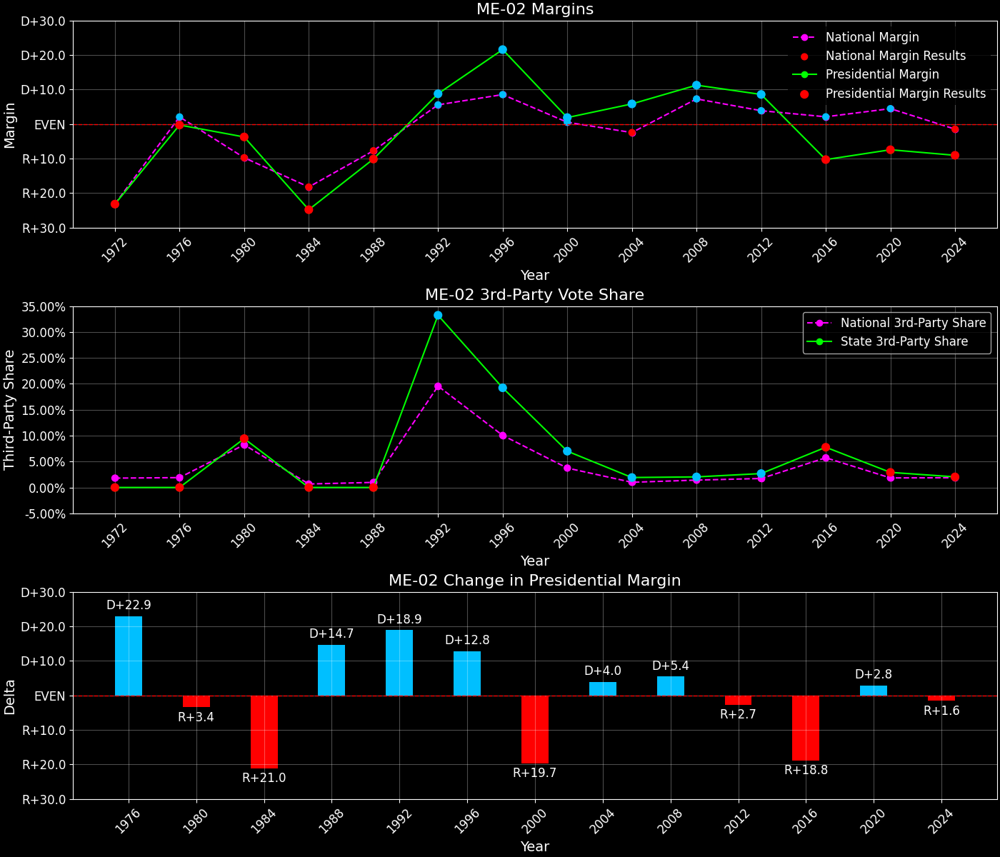
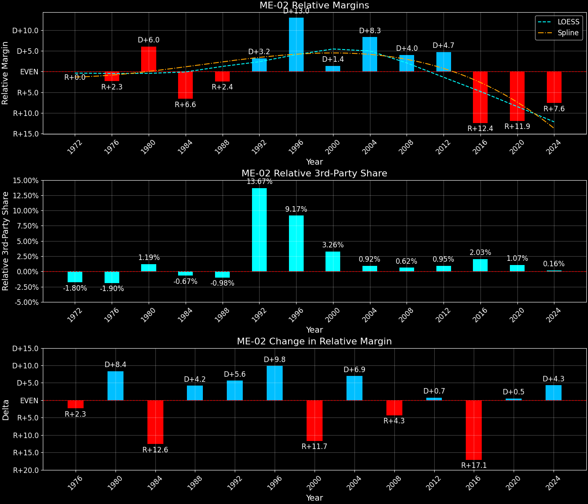

Maine's 2nd Congressional District (ME-02)

Margins · 3rd-Party share · Pres. deltas

Relative margins · Relative 3rd-Party · Rel. deltas
Maine's 2nd Congressional District (ME-02) — Total Data
| Year | EVs | D | R | State Margin | Nat. Margin | Rel. Margin | Total votes |
|---|---|---|---|---|---|---|---|
| 1968 | 1 | 104,469(55.5%) | 80,848(42.9%) | D+12.5 | R+0.6 | D+13.1 | 188,297 |
| 1972 | 1 | 75,556(38.4%) | 121,120(61.5%) | R+23.2 (Δ R+35.7) | R+23.5 (Δ R+23.0) | D+0.4 (Δ R+12.7) | 196,805 |
| 1976 | 1 | 108,681(49.4%) | 109,301(49.6%) | R+0.3 (Δ D+22.9) | D+2.2 (Δ D+25.7) | R+2.5 (Δ R+2.9) | 220,196 |
| 1980 | 1 | 103,361(42.7%) | 112,248(46.3%) | R+3.7 (Δ R+3.4) | R+9.9 (Δ R+12.1) | D+6.2 (Δ D+8.7) | 242,212 |
| 1984 | 1 | 97,065(37.5%) | 161,028(62.1%) | R+24.7 (Δ R+21.0) | R+18.1 (Δ R+8.2) | R+6.6 (Δ R+12.8) | 259,165 |
| 1988 | 1 | 112,491(44.6%) | 137,839(54.6%) | R+10.0 (Δ D+14.6) | R+7.7 (Δ D+10.4) | R+2.3 (Δ D+4.3) | 252,273 |
| 1992 | 1 | 118,229(37.6%) | 90,807(28.9%) | D+8.7 (Δ D+18.8) | D+5.6 (Δ D+13.3) | D+3.1 (Δ D+5.4) | 314,299 |
| 1996 | 1 | 147,735(51.2%) | 85,527(29.6%) | D+21.5 (Δ D+12.8) | D+8.6 (Δ D+3.0) | D+13.0 (Δ D+9.8) | 288,776 |
| 2000 | 1 | 143,658(47.4%) | 137,998(45.6%) | D+1.9 (Δ R+19.7) | D+0.5 (Δ R+8.0) | D+1.4 (Δ R+11.6) | 302,856 |
| 2004 | 1 | 185,139(52.0%) | 164,377(46.1%) | D+5.8 (Δ D+4.0) | R+2.5 (Δ R+3.0) | D+8.3 (Δ D+6.9) | 356,360 |
| 2008 | 1 | 189,778(54.6%) | 150,669(43.4%) | D+11.3 (Δ D+5.4) | D+7.3 (Δ D+9.7) | D+4.0 (Δ R+4.3) | 347,537 |
| 2012 | 1 | 177,283(52.7%) | 148,845(44.3%) | D+8.5 (Δ R+2.8) | D+3.9 (Δ R+3.4) | D+4.6 (Δ D+0.6) | 336,104 |
| 2016 | 1 | 143,739(40.9%) | 180,818(51.4%) | R+10.5 (Δ R+19.0) | D+2.1 (Δ R+1.8) | R+12.6 (Δ R+17.2) | 351,834 |
| 2020 | 1 | 168,696(44.8%) | 196,692(52.3%) | R+7.4 (Δ D+3.1) | D+4.4 (Δ D+2.3) | R+11.9 (Δ D+0.8) | 376,349 |
| 2024 | 1 | 176,789(44.5%) | 212,763(53.5%) | R+9.0 (Δ R+1.6) | R+1.5 (Δ R+6.0) | R+7.5 (Δ D+4.4) | 397,666 |
Column explanations
- Δ
- Change (delta) in the value from the previous election year.
- Year
- Election year.
- EVs
- Number of electoral votes allocated to this state or unit.
- D
- Number of votes for the Democratic candidate (raw count(pct%)).
- R
- Number of votes for the Republican candidate (raw count(pct%)).
- State Margin
- Margin between the two major-party candidates, including third-party votes ((D - R)/total).
- Nat. Margin
- The national presidential margin for that year, including third-party votes ((D_total - R_total)/total_votes).
- Rel. Margin
- The presidential margin relative to the national presidential margin (Margin - Nat. Margin).
- Total votes
- Total voter turnout or ballots cast (when provided).
Maine's 2nd Congressional District (ME-02) — Third-Party Data
| Year | Other votes | State 3rd-Party Share | 3rd-Party Nat. Share | 3rd-Party Rel. Share |
|---|---|---|---|---|
| 1968 | 2,980(1.6%) | 1.58% | 13.59% | -12.00% |
| 1972 | 129(0.1%) | 0.07% | 0.09% | -0.03% |
| 1976 | 2,214(1.0%) | 1.01% | 0.33% | 0.67% |
| 1980 | 26,603(11.0%) | 10.98% | 6.98% | 4.01% |
| 1984 | 1,072(0.4%) | 0.41% | 0.12% | 0.30% |
| 1988 | 1,943(0.8%) | 0.77% | 0.21% | 0.56% |
| 1992 | 105,263(33.5%) | 33.49% | 19.23% | 14.26% |
| 1996 | 55,514(19.2%) | 19.22% | 9.68% | 9.54% |
| 2000 | 21,200(7.0%) | 7.00% | 3.65% | 3.35% |
| 2004 | 6,844(1.9%) | 1.92% | 0.84% | 1.08% |
| 2008 | 7,090(2.0%) | 2.04% | 1.38% | 0.66% |
| 2012 | 9,976(3.0%) | 2.97% | 1.62% | 1.35% |
| 2016 | 27,277(7.8%) | 7.75% | 5.54% | 2.22% |
| 2020 | 10,961(2.9%) | 2.91% | 1.84% | 1.07% |
| 2024 | 8,114(2.0%) | 2.04% | 1.88% | 0.16% |
Column explanations
- Year
- Election year.
- Other votes
- Number of votes for third-party (other) candidates (raw count(pct%)).
- State 3rd-Party Share
- Share of the vote received by third-party (other) candidates.
- 3rd-Party Nat. Share
- The national third-party share for that year (3rd-Party votes / total votes).
- 3rd-Party Rel. Share
- Third-party share relative to the national third-party share (3rd-Party share - Nat. 3rd-Party share).

Two-party margins · relative · deltas
Maine's 2nd Congressional District (ME-02) — Two-Party Data
| Year | 2-Party Margin | 2-Party Nat. Margin | 2-Party Rel. Margin |
|---|---|---|---|
| 1968 | D+12.7 | R+0.7 | D+13.4 |
| 1972 | R+23.2 (Δ R+35.9) | R+23.6 (Δ R+22.9) | D+0.4 (Δ R+13.0) |
| 1976 | R+0.3 (Δ D+22.9) | D+2.2 (Δ D+25.8) | R+2.5 (Δ R+2.9) |
| 1980 | R+4.1 (Δ R+3.8) | R+10.6 (Δ R+12.8) | D+6.5 (Δ D+9.0) |
| 1984 | R+24.8 (Δ R+20.7) | R+18.1 (Δ R+7.5) | R+6.6 (Δ R+13.2) |
| 1988 | R+10.1 (Δ D+14.7) | R+7.8 (Δ D+10.4) | R+2.4 (Δ D+4.3) |
| 1992 | D+13.1 (Δ D+23.2) | D+6.9 (Δ D+14.7) | D+6.2 (Δ D+8.6) |
| 1996 | D+26.7 (Δ D+13.6) | D+9.5 (Δ D+2.6) | D+17.2 (Δ D+11.0) |
| 2000 | D+2.0 (Δ R+24.7) | D+0.5 (Δ R+8.9) | D+1.5 (Δ R+15.7) |
| 2004 | D+5.9 (Δ D+3.9) | R+2.5 (Δ R+3.0) | D+8.4 (Δ D+6.9) |
| 2008 | D+11.5 (Δ D+5.5) | D+7.4 (Δ D+9.8) | D+4.1 (Δ R+4.3) |
| 2012 | D+8.7 (Δ R+2.8) | D+3.9 (Δ R+3.4) | D+4.8 (Δ D+0.7) |
| 2016 | R+11.4 (Δ R+20.1) | D+2.2 (Δ R+1.7) | R+13.6 (Δ R+18.4) |
| 2020 | R+7.7 (Δ D+3.8) | D+4.5 (Δ D+2.3) | R+12.2 (Δ D+1.5) |
| 2024 | R+9.2 (Δ R+1.6) | R+1.6 (Δ R+6.1) | R+7.7 (Δ D+4.5) |
Column explanations
- Δ
- Change (delta) in the value from the previous election year.
- Year
- Election year.
- 2-Party Margin
- Margin between the two major-party candidates, ignoring third-party votes ((D - R)/(D + R)).
- 2-Party Nat. Margin
- The national presidential margin for that year, including third-party votes ((D_total - R_total)/total_votes).
- 2-Party Rel. Margin
- The presidential margin relative to the national presidential margin (Margin - Nat. Margin).